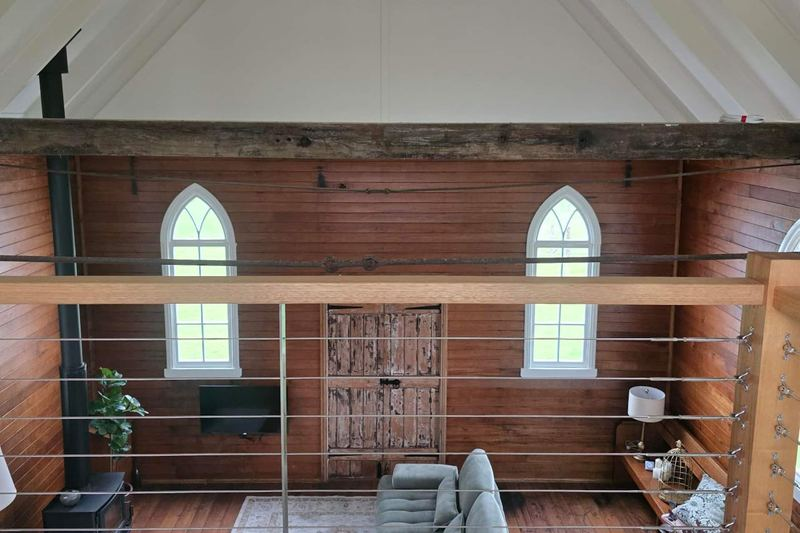
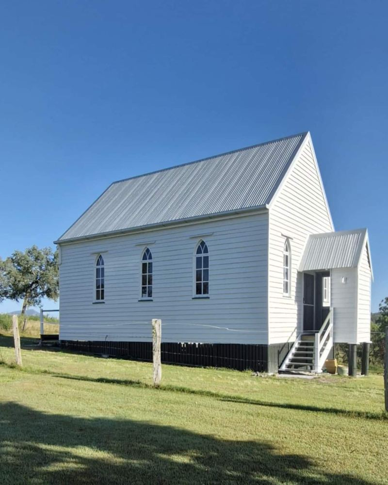

Tarome
It started as a little church at Tarome.
A small weatherboard church, with pointed windows down each side.
1968
A storm took the roof off.
After the storm
It became a hay shed.
The old church was used to store hay.
Facebook Marketplace
Then it turned up for sale online.
It was moved, sight unseen, to the top of a hill at Mount Alford, looking across to the Main Range.
Mount Alford
The roof went back on.
Restored and lit again, it sits beside Vanbery Cottage, which was the old Tarome schoolhouse.

Vanbery Chapel, today.
Restored by Helen and Terry as a stay for two, part of their mission to preserve local history.
Step inside